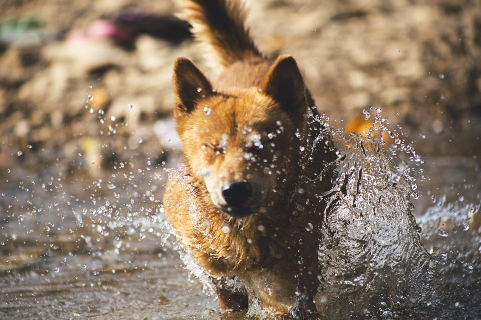

Om Kattluckan
Kattluckan startade 2019 av Josefin Almgren i Gävle. Hon hade klippt katter på en salong i Uppsala i sex år och såg samma sak varje vecka: katter som var helt lugna hemma men som kissade i buren, flämtade i bilen och var för stressade för att hanteras när de väl kom fram.
Vi klipper, badar och avfiltar katter i deras eget hem – ingen transportbur, ingen bilresa, inget främmande väntrum.
Kattluckan startade 2019 av Josefin Almgren i Gävle. Hon hade klippt katter på en salong i Uppsala i sex år och såg samma sak varje vecka: katter som var helt lugna hemma men som kissade i buren, flämtade i bilen och var för stressade för att hanteras när de väl kom fram.
I dag är vi tre kattfrisörer som kör var sin bil i Gävleborg och norra Uppland. Vi bokar en katt per hembesök, eller flera om de bor i samma hushåll, och räknar med 90 minuter inklusive att packa upp och städa efter oss. Vi tar inte emot hundar.

Sju år av köksbord och badrumsgolv
Kattluckan startade 2019 av Josefin Almgren i Gävle. Hon hade klippt katter på en salong i Uppsala i sex år och såg samma sak varje vecka: katter som var helt lugna hemma men som kissade i buren, flämtade i bilen och var för stressade för att hanteras när de väl kom fram.


Boka ett hembesök
Skriv adress, kattens ras och hur pälsen ser ut. Bifoga gärna en bild så återkommer vi med en tid.
- Telefon
- 070-174 06 53
- E-post
- boka@kattluckan.se
- Öppettider
- Hembesök mån–lör 8–18, telefon vardagar 8–10
Boka och hitta hit
- Bokning
- Brynäsgatan 30
802 83 Gävle - Telefon
- 070-174 06 53
- E-post
- boka@kattluckan.se
- Öppettider
- Hembesök mån–lör 8–18, telefon vardagar 8–10